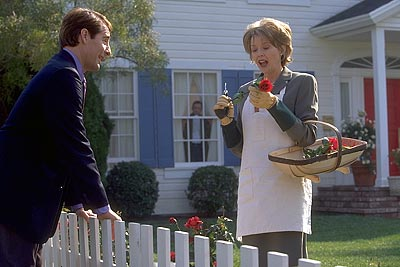

American Beauty: Una aproximación
- Pétalos vs Rosas
Hace unos días, al pasar frente a un cine que proyectaba “American Beauty”, retrasé un poco el paso para volver a ver alguna de las escenas congeladas en las fotografías de la puerta (Escena esta bastante rara ya que cada vez hay menos cine con “puerta a la calle”). Viendo estas imágenes volvió a mi mente un tema que había quedado “flotando”, el asunto de los pétalos. Tanto en las fotos como en el afiche publicitario predomina el color rojo, de las rosas. Afiche: Sensual cuerpo femenino, cruzado por una rosa. |
||
 |
Foto1: (la que acompañó cuanto artículo apareció sobre la película en los suplementos de espectáculos) Kevin Spacey sentado en el sillón y Annette Bening parada atrás. En primer plano el jarrón lleno de rosas. Foto2: (que no es tan representativa del desarrollo de la trama, pero que resulta atractiva a los hombres que se acercan a ver de que trata la película) Mena Suvari en la bañadera (¿o en este caso es bañera?) llena de pétalos de rosas. Kevin Spacey que no le dan los ojos para disfrutar de la imagen. |
|
Los pétalos La primera vez que los vemos aparecer brotan sorpresivamente del buzo de Angela, “la amiguita de la nena”, justo cuando estaba por mostrar sus pechitos juveniles en la imaginación de un embobado y degenerado papá Lester (Esta escena arrancó muchas risas en la función en la cual la vi, a pesar del peso de su contenido). ¿Qué función cumplen los pétalos? Los pétalos solo aparecen en la imaginación de Lester, y allí siempre cumplen la misma función: la de ocultar la desnudez de Angela. Si recordamos que el personaje de Annette Bening se la pasa cultivando y poniendo rosas en el/los jarrón/es que cada tanto vemos en la casa, resulta inevitable pensar que lo que lo separa a él de la desnudez de Angela (en la fantasía, por supuesto) no es otra cosa su mujer. Ahora bien, ¿Miedo a su mujer o un rastro de fidelidad? Es obvio que la mujer que tiene al lado no es la que quiere, pero si la que quiso. De hecho en medio de su “transformación” Lester trata de despertar en ella a la Carolyn de cuando acababan de casarse. Cuando Lester está por consumar lo que era su fantasía (sexo con la chica que lo tiene loco) se detiene. Finalmente tiene a su alcance el objeto de su deseo todo para si. ¿Qué ocurre? Cuando ella le confiesa que es virgen ¿Surge en él un destello de moralidad que hasta ahora había estado perdido? (Porque, después de todo, ¡es la amiga de su hija!). ¿Se detiene porque ahora faltan los pétalos? |
||
En este aspecto hay quienes sugieren que los pétalos están más bien asosciados con la oculta virginidad de ella, pero... ¿por qué dejar tan en claro que la de las rosas es la esposa?. Y además, ¿él sueña con que ella es virgen? Porque en definitiva los pétalos están solo en la cabeza de Lester. |
 | |
Quizás más bien lo que él desea más que a la chica son esos pétalos dispersos, desordenados, libres, en contraposición a las rosas perfectas (ya lo han dicho los vecinos gay, su jardín tiene las mejores rosas) del tamaño perfecto, dispuestas perfectamente en su jarrón en el lugar perfecto. Quizás lo que él desea es volver a tener algo que perdió, a la mujer con la que se casó, esa mujer como era antes de quedar atrapada dentro de tantas imposiciones, sociales , cotidianas, laborales, personales... Los pétalos vs la rosa. Quizás lo peor de todo sea que en realidad lo que él busca es liberarse de su esposa, y tener una aventura, con la que fuera su mujer. Nota: Para seguir pensando... El rojo se convierte en el color dominante de lo que le ocurre a Lester: las rosas y los pétalos, el auto que siempre quiso tener es rojo, en el nuevo trabajo usa una gorra roja, lo última vez que lo vemos está rodeado del rojo de su sangre. ¿A qué apunta esta continuidad estética? |
||
Sergio Alberino |
||